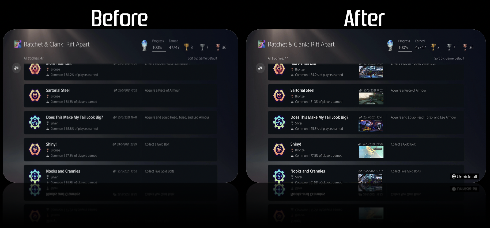

Eclipse Soundscapes Redesign
A 4-week user research project

Eclipse Soundscapes is a project supported by NASA's Space Science Education Consortium (NSSEC).
The project expands researchers' ability to study eclipse phenomena by providing everyday individuals with the equiptment to record the wildlife sounds in their area during the time of the eclipse.
Eclipses are generally known as a visual event, however, Eclipse Soundscapes sought to learn more about it's auditory impacts. This allowed them to deliver a multi-sensory experience that allowed everyone, including those who are visually impared, to witness the event.
The goal of this redesign is to make the Field Researcher Training Page (a hub for individuals who would like to collect data) more accessible and appealing to those aged 55 and older.
UX Researcher & Designer
Sally Estevez, Yufei Lin, Stephen Shadrach, Rhiannon Super
4 weeks
Learn the appeals of those 55+, and redesign the field researcher training page
Figma

Empathize and Define
To better understand the needs of those individuals aged 55+ who were interested in collecting data, we began conducting interviews with the following goals in mind:
- Understand how users feel about the text, images, spacing, layout, and colors of the site
- Learn how they navigate the page
- Determine if the site is readable to users aged 55+
- Discover goals, needs, and frustrations of users while they actively navigate the page
The current field researcher training page is not accessible to older audiences (aged 55+).
Loading
- Long load times initially opening site and moving between pages
Errors
- Error establishing database connection - possibly an issue with Wordpress
Navigation
- Directory is only at the top
- "Back to Top" is at the bottom of each section
- "Back to Top" cuts off top of page
- Too much scrolling
- Floating buttons cut off contacts
- Broken links
Images
- Not consistent sizes
- Some are very small
Text
- Font size is too small
- Text has no padding
- Not enough text/font variation
Sections
- Not enough space in between each
- Too much text with too little breaks
Background
- Very dark color
- Night Mode doesn't work
We interviewed 12 users above the age of 55. We asked a series of questions before, during, and after having them interact with the Field Researcher Training Page. The goals of these interviews were to learn about our research goals and test if our initial impressions/assumptions of the site are also experienced by our target users.
Questions Asked:
- What is your preferred method of browsing the internet? (desktop, mobile, etc.)
- Do you lean towards text-based learning or visual learning?
- What is your preferred method when learning how to build or put something together?
- Is having an option to have text read aloud beneficial for you? Why?
- What is your first impression of the website?
- Why would you use this website?
- Is the purpose of the website clear enough? If yes, is there anything you think should be added? If not, which parts specifically are unclear or confusing?
- What part of the website do you think needs to be improved?
- How do you feel about the navigation on the website?
- What is the hardest part about navigating the website?
- How do you feel about the AudioMoth setup section? Which parts are easy or difficult to follow?
- What is your opinion on the data collection steps and timeline? Do you have any suggestions on how to improve it?
- What set of colors do you think will work for this website?
- Where do you prefer the navigation bar to be located?
- How do you feel about the text on this page? Why do you feel this way about it?
- What part of the website do you like? Why?
- What do you dislike about the website? Can you elaborate more on why you dislike that?
- Do any other websites come to mind where you really liked the layout of them? Why did you like it?
I listed out and classified Playstation 5's main user bases to look into further. The goal of this step is to discover which Playstation 5 user community is in need of assistance and problem solving. The result of this will guide the project's goals and designs. The communities to research further are:
I listed out and classified Playstation 5's main user bases to look into further. The goal of this step is to discover which Playstation 5 user community is in need of assistance and problem solving. The result of this will guide the project's goals and designs. The communities to research further are:
Playstation Gamers
- Have been fans of the previous systems
- Enjoys the company's game exclusives
- Fans of the company overall
Youtubers/Streamers
- Want the console for unboxing purposes
- Learn about it’s specs
- Review overall interaction and feel of the console itself
Trophy Hunters
- Goal is to collect achievements while playing
- Complete a game to it's fullest
- Display their trophies for others to see
Using what was learned from research and analysis, a user persona was created to accurately represent who is being designed for. It was determined that the best course of action was to create a persona to reflect the needs and wants of the Trophy Hunting Community on Playstation 5. This persona helped guide the project's decisions along the design process to make sure the solution is centered on our user and their experiences. Therefore, meet Mason:

Ideate and Prototype
The Playstation 5 console's layout is not accessible or appealing to trophy hunters due to it's trophy menu being put out of the way and the mulitple steps it takes to unhide trophies within the list. The interface is upsetting to the community on a second level due to it's lack of customizability and removal of community groups and discussion pages.
Based on the users' needs and wants, the following list of objectives was put together in order to accurately design with the community in mind and achieve maximum satisfaction. The lists of objectives are ordered from Required Features at the top of the list, to Nice to Have Features towards the bottom.
Trophy Lists
- Make more accessible trophy lists by adding a link on the homepage
- Include an Unhide All button for hidden content
- Add screenshots of achievement to trophy page
- Fill in game icons for older generation console trophies
Communities and Customization
- Reimagine the What's New tab for the Playstation 5
- Allow users to move existing homescreen tabs out of the way
- Remove News/Explore tab from the homescreen
- Enable customizable backgrounds
The approach for the HCI experience itself was based on the research conducted surrounding the needs and wants expressed by the community, as well as being able to work off of existing material to ensure that it met the expectations of the target audience and was a feasible solution to the problem.
These expectations included the ability to easily access trophy lists, compare completion progress with friends, and interact with other community members and players while using the Playstation 5 console. In order to make the implementation of these new features painless and simple for the players, it was mocked up to only require a usb, containing the software edits, to be inserted into the system for a one-time download on the user’s part.
The advertisement was set up to be human-centered by expressing the customer’s main pain points using the trending games and complaints as examples.
The advertisement would be marketed on the two reddit forums r/PS5 and r/TrophyHunters to gain the most reach towards active members of this community and would easily link players to the software download for the home screen overwrite along with a step by step guide on how to download the content to the system and access it. The post itself will be a Promoted Post, or an in-feed ad placement, as offered by Reddit and explained by AdParlor. This should allow it to gain more views from any user scrolling past.
Since the advertisement was simply intended to attract users within the target community, the details of how the software would work and the visual mockups were kept at a minimum but will be elaborated on and incorporated into the final design presentation. The advertisement should be simplistic enough that any user scrolling past it can quickly understand the purpose of the post, the software, and the issues it targets without needing to divert their attention for too long since many of these users are on the reddit pages to explore community stories and typically wouldn’t pay as much mind to longer advertisements.
This advertisement for the prototype was based off of the above marketing approach. It features a simplistic design and aims to be accessible to the general public, but the target audience remains as Playstation's Trophy Hunting Community.

Putting together everything that was learned, I was able to create a high fidelity prototype of the Playstation 5's interface which would help our users fulfill their needs and meet their goals.



Through this project, I was able to conduct in-depth user research, analyze the product's uses, evaluate Playstation's human-computer interaction, and create both marketing and prototype high fidelity designs, which would ultimately help form an accessible and usable interface for Playstation 5's Trophy Hunting Community.
It was interesting to explore the different principles of human-computer interaction and human-centered design through this project. I now understand how to evaluate a product's appeal based on desirability, feasibility, and viability, which was something I did not know how to do prior to this project.
Thanks to this unsolicited redesign of the Playstation 5's interface, I feel more confident in assessing user experiences, prototyping user interfaces with Adobe Photoshop, and identifying problems that can arise with even the most in-demand products.
Perform user testing to assess whether or not the prototype design is intuitive and solves the user's problems. Continue to build upon the prototpe until satifsied.
Once it was determined that the new design's changes improved accessibility and usability for Playstation's users, the redesign would be officially marketed to the users and the design would be implemented via USB download.